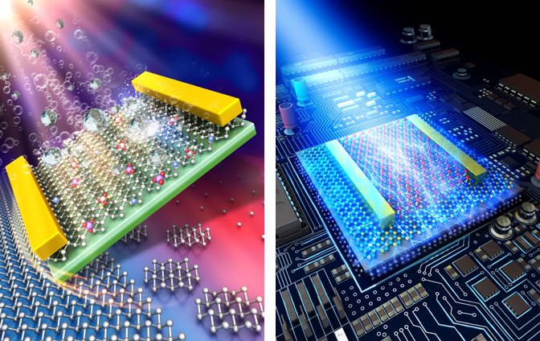
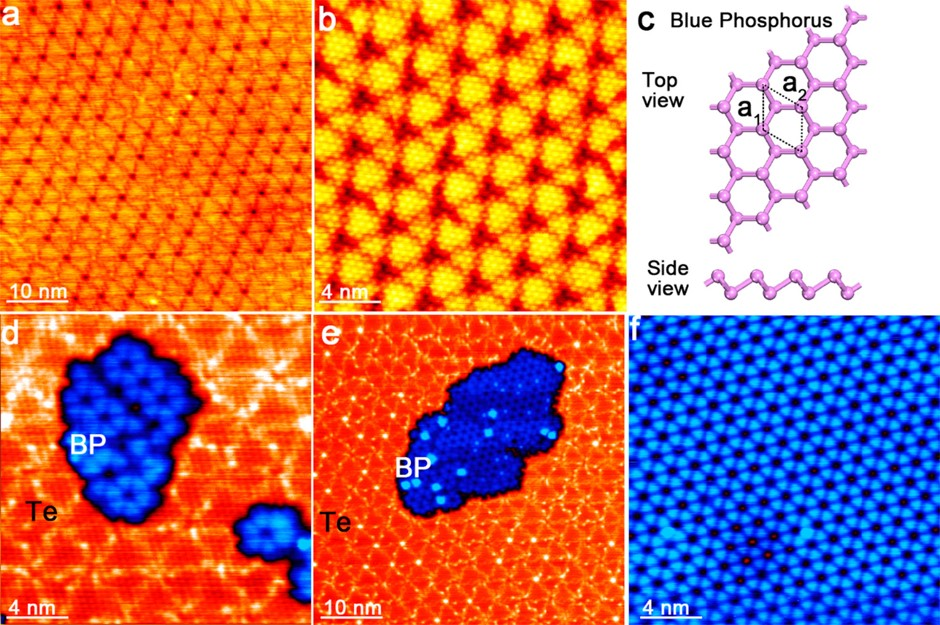
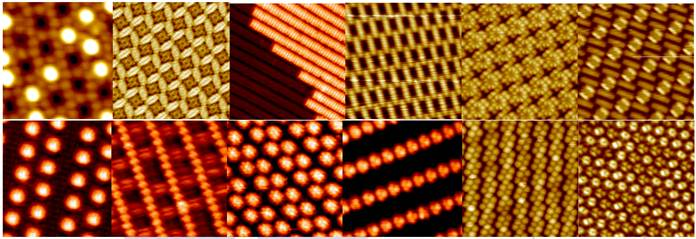
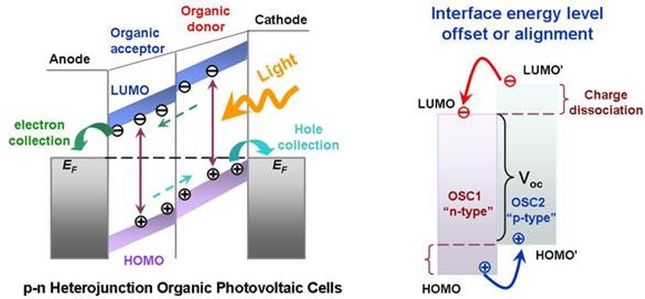
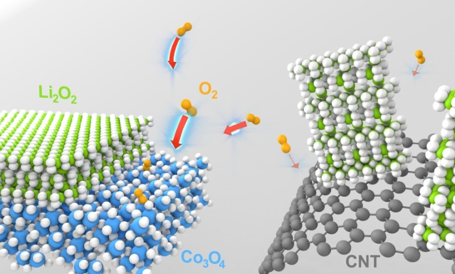

Many technologically important devices, such as transistors, memories, lasers, solar cells, light emitting diodes, sensors, electrochemical energy storage devices, all exploit interfacial phenomena. Without precise control of the interface properties, many devices will not function properly. The broad objective of Dr. Chen Wei’s research is to have molecular-scale understanding of these interface properties, and hence to provide design rules for effective interface engineering approaches to improve device performance and materials efficiency, with particular emphasis on the interface engineering for organic and 2D materials based functional devices, and interface-controlled nanocatalyst for energy and environmental research.
(1) [Chem. Soc. Rev. 47, 3100-3128 (2018); Nat. Commun. 9, 2966 (2018); Nat. Commun. 6, 6485 (2015); Adv. Mater. 30, 1801931 (2018); Adv. Mater. 30, 1802207 (2018); Adv. Mater. 30, 1804470 (2018); Angew. Chem. Int. Ed. 56, 9131-9137 (2017); Nano Lett. 17, 4122-4129 (2017); ACS Nano 12, 2070-2077 (2018); ACS Nano 8, 5323-5329 (2014); J. Am. Chem. Soc. 129, 10418 (2007); Granted Patents: Chinese Patent No. ZL 201180022146.0], granted on 22nd June 2016; US Patent No. ZL 9,269,773, granted on 23rd Feb 2016; Russian Patent No. 2565336, granted on 20th Oct 2015; Japaneses Patent 5814348, granted on 2nd Oct 2015. ]

(2) We have systematically investigated of epitaxial growth mechanism of single blue phosphorous and black phosphorous films, CVD graphene on metals, and the epitaxial graphene on SiC. [ACS Nano 11, 4943–4949 (2017); Nano Letter 16, 4903-4908 (2016); Nanoscale 7, 4522-4528 (2015); Scientific Reports 4, 4431 (2014); J. Am. Chem. Soc. 135, 9050-9054 (2013); J. Am. Chem. Soc. 135, 8409-8414 (2013); ACS Nano 3, 3431 (2009); ACS Nano. 2, 2513-2518 (2008).]

We developed various bottom-up self-assembly approaches for the rational design of molecular nanostructure arrays over macroscopic area with superior multi-functionalities for molecular nano-devices, as well as to systematically investigated the molecule-substrate interfacial properties, including ultrafast interfacial charge transfer, interfacial energy level alignment and molecular orientation.
(1) We have developed various self-assembly strategies to successfully fabricate molecular nanostructure arrays over macroscopic area with desired functionalities, as revealed by low-temperature scanning tunneling microscopy (LT-STM) studies [Nanoscale 7, 4306 - 4324(2015); Phys. Chem. Chem. Phys., 15, 12414 – 12427(2013); J. Am. Chem. Soc. 133, 820–825 (2011); J. Am. Chem. Soc. 130, 2720 (2008); J. Am. Chem. Soc. 130, 12285-12289 (2008); Advanced Materials. 20, 484 (2008); Small 6, 70-75 (2010); Small 3, 2015 (2007); Chemical Communication 46,9040–9042 (2010); Appl. Phys. Lett. 99, 143114 (2011); Appl. Phys. Lett.92, 193301 (2008); Appl. Phys. Lett. 92, 023105 (2008); J. Appl. Phys. 111, 034304 (2012); J. Appl. Phys.109, 084307 (2011); J. Chem. Phys. 142, 101902 (2015); J. Chem. Phys.134, 154706 (2011); J. Phys. Chem. C.118, 4151-4159 (2014); J. Phys. Chem. C.117, 1013-1019 (2013); J. Phys. Chem. C. 116, 11565-11569 (2012).].

(2) We have systematically investigated intermolecular interaction determined molecular orientation at organic donor-acceptor heterojunction interfaces, fabricated organic heterojunctions with well-defined molecular orientation, revealed the molecular orientation dependent energy level alignment mechanism at the organic donor-acceptor heterojunction interfaces, and the correlation with the organic electronic device performance. [ACS Nano 8, 1699-1707 (2014); ACS Nano 2, 693 (2008); Advanced Functional Materials 24, 6540-6547(2014); Advanced Functional Materials 21, 410-424 (2011); ACS Applied Materials & Interfaces 5, 4696-4701 (2013); ACS Applied Materials & Interfaces 4, 3134-3140 (2012); J. Mater. Chem. C., 1, 1491-1499 (2013); Organic Electronics 12, 2793-2800 (2012); Organic Electronics 12, 534-540 (2011); Appl. Phys. Lett. 103, 063303 (2013); Appl. Phys. Lett. 99, 093301 (2011); Appl. Phys. Lett. 92, 063308 (2008); Appl. Phys. Lett. 91, 114102 (2007); Chemical Communication 4276-4278 (2008); J. Phys. Chem. C. 115, 23922-23928 (2011); J. Appl. Phys. 108, 053706 (2010); J. Phys. Chem. C. 112, 5036 (2008); J. Phys. Chem. C. 113, 12832-12839 (2009); J. Appl. Phys. 114, 113709 (2013); J. Appl. Phys. 106, 064910 (2009); Phys. Chem. Chem. Phys., 14, 14127-14141 (2012) Chem. Mater. 20, 7017-7021 (2008).]

We have started the research of interface-controlled nanocatalysis for energy and environmental research, with particular emphasis on the atomic scale investigation of surface reaction mechanism and single molecule manipulation. [Nano Energy. 36, 68-75 (2017); ACS Catalysis 6, 4430-4439 (2016); Nano Letter15,3181–3188 (2015); Nano Letter 15,8091-8098 (2015); Appl. Phys. Lett. 104, 113506 (2014); J. Phys. Chem. C.118, 1712-1718 (2014); Small 8, 1423-1428 (2012).]
